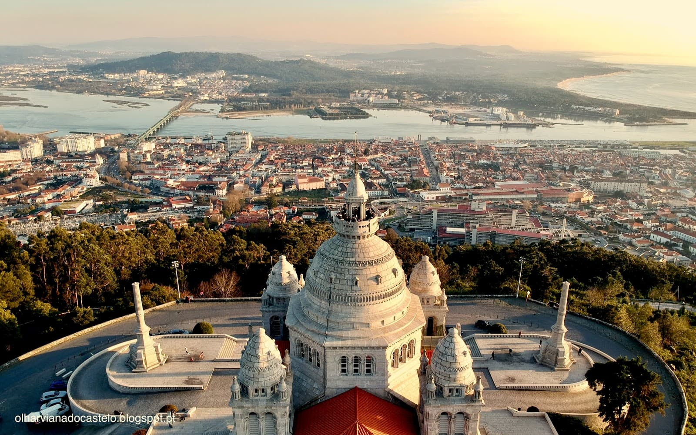
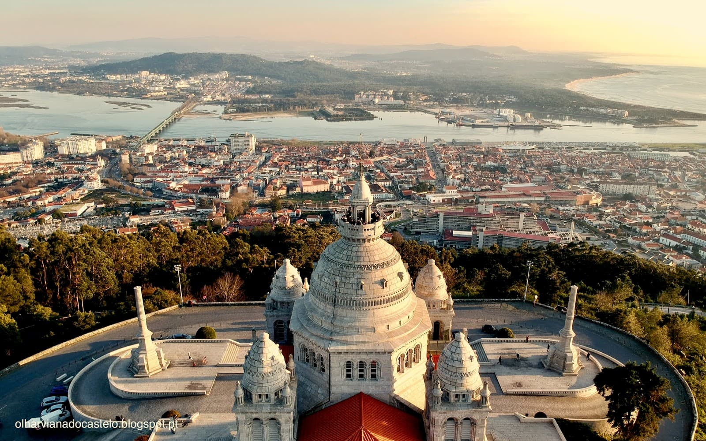
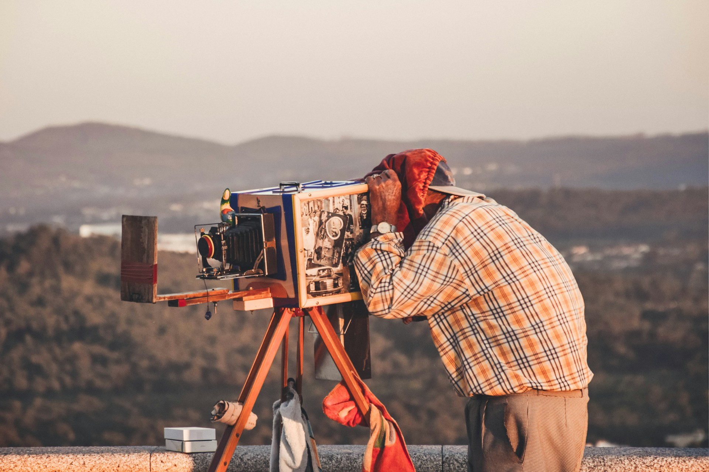

El Santuari de Santa Luzia és un dels llocs més emblemàtics de Viana do Castelo i
una destinació
imprescindible per a tots els visitants. Situat al cim del Mont de Santa Luzia, aquest
magnífic
santuari ofereix vistes espectaculars tant a la ciutat com a la desembocadura del riu
Lima a
l'oceà Atlàntic, convertint-se en un lloc únic i inspirador, incloent-ne una
impressionant
posta
de sol.
 

L'enorme cúpula que corona el santuari, així com les altres quatre petites, no
passen pas desapercebudes per cap visitant del monument dedicat al Sagrat cor de Jesús.
Podràs tenir
l'experiència de pujar a la cúpula de la basílica per gaudir d’unes vistes de
360 graus de
Viana
do Castelo.

Els visitants poden accedir a la muntanya amb cotxe, a peu o amb el funicular de Santa
Luzia. Un cop a dalt trobaràs un fotògraf amb el qual podràs fer-te una foto a blanc i
negre.